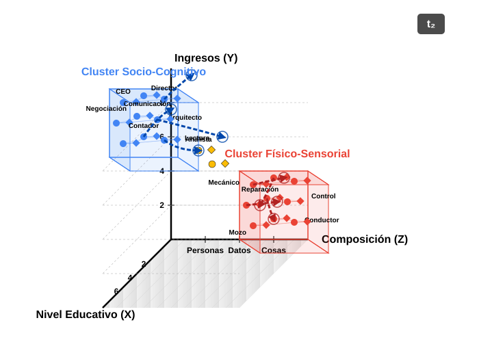

| source | target | skill_name | skill_type | diffusion | year_emission | year_adoption | data_value_source | data_value_target | source_education | source_wage | target_education | target_wage | structural_distance | education_diff_abs | wage_diff_abs | skill_status |
|---|---|---|---|---|---|---|---|---|---|---|---|---|---|---|---|---|
| 11-1011.00 | 13-1111.00 | Critical Thinking | NetCluster_1 | 1 | 2015 | 2023 | 4.5 | 4.2 | 4.8 | 120000 | 4.5 | 95000 | 0.35 | -0.3 | -25000 | HighStatus |
| 11-1011.00 | 15-1252.00 | Critical Thinking | NetCluster_1 | 0 | 2015 | 2023 | 4.5 | 1.5 | 4.8 | 120000 | 4.7 | 110000 | 0.62 | -0.1 | -10000 | HighStatus |
| 11-1011.00 | 29-1141.00 | Active Listening | NetCluster_1 | 1 | 2015 | 2023 | 4.2 | 4.0 | 4.8 | 120000 | 5.0 | 85000 | 0.40 | 0.2 | -35000 | HighStatus |
| 13-1111.00 | 11-1011.00 | Judgment | NetCluster_1 | 0 | 2015 | 2023 | 4.0 | 3.0 | 4.5 | 95000 | 4.8 | 120000 | 0.35 | 0.3 | 25000 | MediumStatus |
| 13-1111.00 | 15-1252.00 | Complex Prblm Solv | NetCluster_1 | 1 | 2015 | 2023 | 3.8 | 4.1 | 4.5 | 95000 | 4.7 | 110000 | 0.28 | 0.2 | 15000 | MediumStatus |
| 27-1021.00 | 27-1024.00 | Arm-Hand Steadiness | NetCluster_2 | 1 | 2015 | 2023 | 4.7 | 4.5 | 3.5 | 65000 | 3.6 | 70000 | 0.15 | 0.1 | 5000 | LowStatus |
| 27-1021.00 | 49-9071.00 | Arm-Hand Steadiness | NetCluster_2 | 0 | 2015 | 2023 | 4.7 | 2.0 | 3.5 | 65000 | 3.0 | 55000 | 0.75 | -0.5 | -10000 | LowStatus |
| 49-9071.00 | 51-2092.00 | Manual Dexterity | NetCluster_2 | 1 | 2015 | 2023 | 4.9 | 4.8 | 3.0 | 55000 | 2.8 | 52000 | 0.22 | -0.2 | -3000 | LowStatus |
Skill Pathways, Work’s Worth: A Diffusion Dynamics Approach
Articulating Occupational Boundaries and Status Hierarchies through Skill Diffusion
Roberto Cantillan
Sociology, Pontificia Universidad Católica de Chile
Advisor: Mauricio Bucca PhD

I. THE PUZZLE
The Puzzle: Labor Market Dynamics & Persistent Inequality
Contemporary labor markets are characterized by unprecedented dynamism: technological advancements, globalization, and evolving industrial landscapes continually reshape the world of work (Autor 2015; Kalleberg 2011).
Despite this flux, foundational structures of occupational hierarchy and socio-economic inequality exhibit remarkable persistence and adaptive resilience (Tilly 1998).
The polarization of the labor market
The polarization of the labor market is a well-documented phenomenon, where the demand for high-skill and low-skill jobs increases, while middle-skill jobs decline.
This polarization is often attributed to technological change and globalization, which have led to the devaluation of certain skills and the revaluation of others.
U.S. job growth from the 1980s to 2010s was characterized by the outsized growth of low-wage service jobs, particularly for women and nonwhite workers
However, the mechanisms underlying these processes remain poorly understood, particularly in terms of how they interact with occupational boundaries and status hierarchies.
The question
- How does the interplay between skill diffusion, occupational boundaries, and skill valuations actively (re)produce and transform social stratification within dynamic ocupational markets?
The Occupational Skill Space
To investigate these mechanisms, we adopt a process-relational and ecological perspective, conceptualizing the labor market as a multi-dimensional “Occupational Skill Space”:
This space is analogous to a “Blau Space” (Blau 1977; McPherson 2004), where dimensions are defined by distributions of critical resources and characteristics – primarily skills, but also associated educational prerequisites and wage levels.
Within this space, occupations function as “niches” (Popielarz and Neal 2007), each defined by its unique bundle of skill requirements and its position within the broader status hierarchy.
Skills (defined as O*NET KSA - Knowledge, Skills, Abilities) are dynamic resources that flow (diffuse) along specific trajectories between these occupational niches (Alabdulkareem et al. 2018).
The Occupational Skill Space II

1. How Do Skills Move? Pathways and Filters
(Trajectory Channeling & Filtration)
The movement of skills between jobs isn’t random. It follows certain “pathways” or routes, influenced by:
- Existing Job Hierarchies:
- Differences in required education.
- Differences in pay levels. (e.g., It’s often easier to move to jobs with similar requirements than to make big leaps in education or status).
- Job Similarity (Structural Affinity):
- How similar the skill profiles are between one job and another. (e.g., It’s more common to move to a job that requires skills you already have or very related ones).
2. Job Boundaries: How Are They Shaped by Skill Movements?
(Boundary Articulation via Trajectories)
The way skills move between jobs helps define or change the “boundaries” between different types of occupations:
- Clearer Boundaries (Sharpening):
- When dominant skill movements involve big “leaps” (e.g., requiring much more education or a significant status change).
- Stronger Boundaries (Reinforcement):
- When skills primarily transfer between very similar types of jobs.
- Crossable Boundaries (Bridging/Permeation):
- When highly transferable skills allow people to move between quite different types of jobs.
3. Skill Value: How Does It Change Based on Its “Journey”?
(Positional Revaluation through* Trajectories)*
The value (both economic and symbolic) of a skill can change based on the paths it takes as it moves between jobs or as people acquire it:
Pathways Matter: A skill’s value is affected by how it predominantly moves or is acquired in the labor market.
Example: “Educational Escalation”
- If a skill starts to be primarily learned through higher education (e.g., a university degree), society may see it as more valuable or prestigious.
II. METHODOLOGY
Data Source
- We will use the O*NET database, which provides detailed information on job requirements, including skills, education, and wages.
- We will also use the U.S. Census Bureau’s American Community Survey (ACS) to analyze labor market dynamics and occupational mobility.
- IPUMS-CPS data will be used to analyze the educational and occupational trajectories of individuals in the labor market.
Occupational - Skill Space
- Occupational Skill Profiles:
- Each occupation \(j\) is defined by a quantitative vector of O*NET skill importance/level values, \(onet(j,s)\), representing its reliance on each skill \(s\).
- Intuition: This vector acts as a “skill fingerprint” for each occupation, detailing its specific demands.
- Revealed Comparative Advantage (RCA):
- Purpose: To measure an occupation’s relative specialization in a skill, identifying if it uses that skill more intensively than the average occupation.
- Calculation: For skill \(s\) in occupation \(j\): \[rca(j,s) = \frac{\text{Share of skill } s \text{ in occupation } j\text{'s total skill needs}}{\text{Share of skill } s \text{ in the entire system's total skill needs}}\] Where:
- Numerator: \((onet(j,s) / \sum_{s' \in S} onet(j,s'))\)
- Denominator: \((\sum_{j' \in J} onet(j',s) / \sum_{j' \in J, s'' \in S} onet(j',s''))\)
Occupational - Skill Space II
- Interpretation: * \(rca(j,s) > 1\): Occupation \(j\) has a comparative advantage in skill \(s\); the skill is “overexpressed” or “effectively used” (denoted \(e(j,s)=1\)). This highlights skills that distinctively characterize the occupation. * \(rca(j,s) \le 1\): The skill is not a distinctive specialty for occupation \(j\) relative to the average.
- Benefit: Normalizes raw O*NET scores to filter out ubiquitous skills and spotlight an occupation’s key distinguishing skill requirements.
Skill Networks
- Clusters (
skill_type):- Skill-Skill Complementarity Network (Skillscape): A network is constructed where nodes are skills. The weight of an edge between two skills, \(\theta(s,s')\), represents their complementarity. This is calculated as the minimum of the conditional probabilities that both skills are effectively used together in the same occupations: \[\theta(s,s') = \frac{\sum_{j \in J} e(j,s) \cdot e(j,s')}{max(\sum_{j \in J} e(j,s), \sum_{j \in J} e(j,s'))}\] This captures how skills support each other, either by boosting productivity or through ease of simultaneous acquisition.
- Louvain Community Detection: This unsupervised algorithm is applied to the skill complementarity network to identify clusters of skills (skill types). It works by greedily optimizing modularity, comparing the density of connections within a community to that between communities, without pre-specifying the number of clusters.
Identifying Diffusion Events (diffusion = 1)
Core Idea: A skill diffuses from an occupation already using it (source) to an occupation that newly adopts it (target) between a
start_yearandend_year.Process:
- Effective Skill Use: Determine if a skill is “effectively used” in each occupation for both start and end years (Revealed Comparative Advantage - RCA > 1).
- Identify Sources: List occupations effectively using the skill in the
start_year. - Identify New Adopters (Targets): List occupations effectively using the skill in the
end_yearBUT NOT in thestart_year. - Positive Event: For a given skill, a positive diffusion event (
diffusion = 1) is created for every pair of (source occupation, new adopter target occupation).
Constructing Non-Diffusion Events (diffusion = 0)
Core Idea: A skill does not diffuse from a source occupation to a target occupation if the target fails to effectively use the skill by the
end_year.Process:
- Effective Skill Use & Sources: Same as for positive events (RCA > 1 in
start_yearfor sources). - Identify Potential Non-Adopters (Targets): List all relevant occupations that are NOT effectively using the skill in the
end_year. - Negative Event: For a given skill, a negative diffusion event (
diffusion = 0) is created for every pair of (source occupation, potential non-adopter target occupation). - Exhaustive Generation: The script generates all such possible negative (non-diffusion) events.
- Effective Skill Use & Sources: Same as for positive events (RCA > 1 in
Key Variables for Modeling Skill Diffusion Trajectories
| Variable Category | Variable Name(s) in Data (Model version might be transformed, e.g., standardized) | Operationalization & Description |
|---|---|---|
| Dependent Variable | diffusion |
Binary (1/0): Indicates if a skill was newly adopted (RCA > 1 in 2023, but not effectively used in 2015) by the target occupation, from a 2015 source occupation. |
| Skill Characteristics | skill_type |
Factor: Classification of the skill (e.g., NetCluster_1, NetCluster_2, NetCluster_3 based on network analysis, or other types like empirical_high_use, no_clasificada). |
skill_status |
Factor: Categorical status (e.g., LowStatus, MediumStatus, HighStatus, UnknownStatus) based on the average wage/education of occupations effectively using the skill in 2023. |
|
| Edu. Status Differential | education_diff_abs ( education_diff_rel) |
Numeric: Absolute difference (Target Edu - Source Edu). education_diff_rel is ((Target Edu / Source Edu) - 1). Often standardized for modeling (e.g., education_diff_abs_dir_std) and potentially squared. |
| Wage Status Differential | wage_diff_abs ( wage_diff_rel) |
Numeric: Absolute difference (Target 2023 Wage - Source 2015 Wage). wage_diff_rel is ((Target Wage / Source Wage) - 1). Often standardized for modeling (e.g., wage_diff_abs_dir_std) and potentially squared. |
| Structural Proximity | structural_distance |
Numeric: Jaccard distance calculated on binarized (RCA > 1) occupational skill profiles. Skill profiles for distance use 2023 data with 2015 as fallback. Often standardized for modeling (e.g., structural_distance_std). |
| Source Occ. Attributes | source_education |
Numeric: Education score (e.g., Edu_Score_Weighted) of the source occupation. Often standardized for modeling (e.g., source_education_std). |
source_wage |
Numeric: Median wage of the source occupation in the year_emission (2015). Often standardized for modeling (e.g., source_wage_std). |
|
| Control | target_wage_imputed_indicator |
Factor/Binary: Indicates if the target occupation’s wage for year_adoption (2023) was imputed. (Presence depends on upstream occupation_attributes_global data). |
Hypothetical Data Example
REFERENCES
References
Alabdulkareem, Ahmad, Morgan R. Frank, Lijun Sun, Bedoor AlShebli, César Hidalgo, and Iyad Rahwan 2018. Unpacking the polarization of workplace skills. Science Advances 4(7) eaao6030.
Autor, David H. 2015. Why are there still so many jobs? The history and future of workplace automation. Journal of Economic Perspectives 29(3) 3–30.
Blau, Peter M. 1977. A macrosociological theory of social structure. American Journal of Sociology 83(1) 26–54.
Kalleberg, Arne L. 2011. Good jobs, bad jobs: The rise of polarized and precarious employment systems in the united states, 1970s-2000s. Russell Sage Foundation.
McPherson, M. 2004. A Blau space primer: Prolegomenon to an ecology of affiliation. Industrial and Corporate Change 13(1) 263–280. https://academic.oup.com/icc/article-lookup/doi/10.1093/icc/13.1.263.
Popielarz, Pamela A., and Zachary P. Neal 2007. On the edge or in between: Niche position, niche overlap, and the duration of voluntary association memberships. American Journal of Sociology 101(3) 698–720.
Tilly, Charles 1998. Durable inequality. University of California Press.
Cantillan & Bucca | Skill Pathways, Work’s Worth: A Diffusion Dynamics Approach | 2025